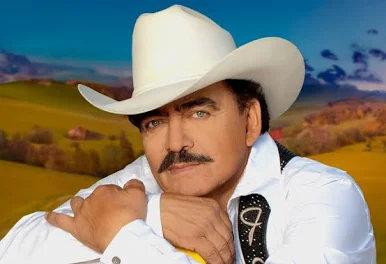

Joan Sebastian
Nombre: José Manuel Figueroa Figueroa
Origen: Juliantla, Guerrero, México
Profesión: Cantante y compositor
Joan Sebastian fue uno de los artistas más representativos de la música mexicana, conocido como "El Rey del Jaripeo". Destacó por sus composiciones románticas.Joan Sebastian nació en la localidad de Juliantla, municipio de Taxco de Alarcón, al norte del estado de Guerrero, México. Su madre fue doña Celia Figueroa.[10] Cuando tenía ocho años de edad ingresó como estudiante interno a un establecimiento educativo en Guanajuato, donde dio sus primeros pasos en el mundo de la música; de hecho, modificaba las letras de las canciones y componía versos musicales. Tres años después regresó a Juliantla y a los doce años volvió a ser internado, pero en esta ocasión en una institución educativa religiosa en Morelos, donde su cuidado estuvo a cargo del sacerdote David Salgado. En aquella época manifestó su deseo de convertirse en sacerdote; sin embargo, su padre se negó a que su hijo dedicara su vida a la iglesia ya que consideraba que tenía talento para la música.[11] A la abuela de Sebastian le pareció una buena idea que su nieto iniciara una vida religiosa y estaba dispuesta a apoyarlo.[12] A pesar de la negativa de su padre, insistió en emprender una vida sacerdotal y a los catorce años se inscribió como seminarista en el Seminario Conciliar de San José, en Cuernavaca, Morelos. En la época que estuvo de alumno del seminario compuso una misa, pero finalmente tomó la decisión de que su vocación no era el sacerdocio.[12][13
Canción destacada: Eso y Más
Cornelio Vega Jr.
Nombre: Cornelio Vega Jr.
Origen: Ciudad Obregón, Sonora, México
Profesión: Cantante y compositor
Vocalista principal de Cornelio Vega y Su Dinastía. Una de las figuras jóvenes más destacadas en el género norteño-banda.Joan Sebastian nació en la localidad de Juliantla, municipio de Taxco de Alarcón, al norte del estado de Guerrero, México. Su madre fue doña Celia Figueroa.[10] Cuando tenía ocho años de edad ingresó como estudiante interno a un establecimiento educativo en Guanajuato, donde dio sus primeros pasos en el mundo de la música; de hecho, modificaba las letras de las canciones y componía versos musicales. Tres años después regresó a Juliantla y a los doce años volvió a ser internado, pero en esta ocasión en una institución educativa religiosa en Morelos, donde su cuidado estuvo a cargo del sacerdote David Salgado. En aquella época manifestó su deseo de convertirse en sacerdote; sin embargo, su padre se negó a que su hijo dedicara su vida a la iglesia ya que consideraba que tenía talento para la música.[11] A la abuela de Sebastian le pareció una buena idea que su nieto iniciara una vida religiosa y estaba dispuesta a apoyarlo.[12] A pesar de la negativa de su padre, insistió en emprender una vida sacerdotal y a los catorce años se inscribió como seminarista en el Seminario Conciliar de San José, en Cuernavaca, Morelos. En la época que estuvo de alumno del seminario compuso una misa, pero finalmente tomó la decisión de que su vocación no era el sacerdocio.[12][13
Canción destacada: 15 Besos

Banda MS
Origen: Mazatlán, Sinaloa, México
Profesión: Agrupación musical
Banda Sinaloense MS de Sergio Lizárraga es una de las bandas más influyentes y galardonadas del género regional mexicano.Banda MS de Sergio Lizárraga, conocida artísticamente como Banda MS, es una agrupación de música regional mexicana originaria de Mazatlán, Sinaloa, México. Fue fundada en 2003 por Sergio Lizárraga y se ha consolidado como una de las bandas más representativas y exitosas del género banda en el siglo XXI
Canción destacada: Mi Mayor Anhelo

Los 2 de Tamaulipas
Origen: Tamaulipas, México
Profesión: Agrupación de música norteña
Agrupación conformada por los hermanos Rolando y Orlando Zapata, reconocidos por su estilo de música norteña y corridos.Los Dos De Tamaulipas es una agrupación de regional mexicano. Se fundó en 2013, en Tamaulipas, México, por los gemelos Rolando y Orlando Zapata. Han compartido sus temas, mostrando con sus letras, parte de sus vidas y realidades sociales. Destacan entre sus éxitos, "Arriba la compañía", "Pura adrenalina", "Bendecido" y "Con toda la fe", que cuentan con excelente cifras de reproducciones en las plataformas digitales de reproducción musical.
Canción destacada: El Chalito
- Regional mexicano
- Banda sinaloense
- Norteño
- Ranchero
- Corridos
- Joan Sebastian
- Cornelio Vega
- Los 2 de Tamaulipas
- Banda MS